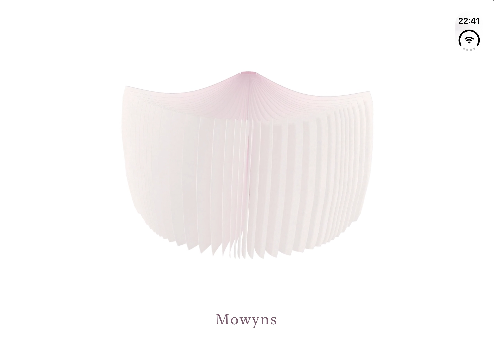

Mowyns Note
莫问笔记
今天，先记今天的事。

我一直想找一款简单、好用、完全免费的记录工具，找了很久，都没有遇到合适的。于是做了莫问笔记，也把它用在自己的日常里。
我希望每天打开它时，眼前是今天的生活。日历页按天显示记录，昨天的内容留在昨天，不会一直堆在今天。想回头看看时，再去翻日历，或沿着时间线慢慢回看。过去的记录仍然保留，每天也都有新的一页。
完全免费，无广告、订阅或内购。无需登录，离线使用。
Mowyns Note

我一直想找一款简单、好用、完全免费的记录工具，找了很久，都没有遇到合适的。于是做了莫问笔记，也把它用在自己的日常里。
我希望每天打开它时，眼前是今天的生活。日历页按天显示记录，昨天的内容留在昨天，不会一直堆在今天。想回头看看时，再去翻日历，或沿着时间线慢慢回看。过去的记录仍然保留，每天也都有新的一页。
完全免费，无广告、订阅或内购。无需登录，离线使用。